Since its inception, a number of activities have been conducted. One of the first steps taken was the creation of an online network of alumnae, under the name 'Women Engineers Connect'. Starting from the batch of 1990 up to the graduating batch of 2017, an overwhelming response was noted, with more than 200 members joining within the first 5 days. A registration drive and an initial survey was conducted, after which the results were consolidated and analysed. Alongside, an icebreaking and hand holding session was also held for the first target group of female students at GCEK.
A 24 hour Women Hackathon was conducted in collaboration with ICFOSS – International Centre for Free and Open Source Software (an initiative of the Kerala Government) and the ISTE Chapter of GCEK. This in-house program, included interaction with alumnae, along with a competitive event that involved building assistive chatbots.
The 'SHE Coders' platform was initiated shortly thereafter, which provided an online platform for students to develop their coding skills with alumnae as mentors. The program provided flexible timing for conducting activities which were designed in such a way so as to familiarize students with industry trends. The first batch of SHE Coders had 20 active participants, who engaged in self and peer-based learning to implement React framework for web development. Training on Matlab was also provided with similar intent, and was concluded with 30 contact hours.
A workshop on Resume Building was conducted in association with the Rethink Foundation. Through the workshop, it was intended to introduce participants to the nuances of resume etiquette. The day long programme worked towards instilling good resume writing skills, with a focus on exploring job descriptions for each persons dream job while still in college, so as to cultivate the relevant industry skills and create resumes that represent them better.
The flagship event of the first phase of SHE was 'Lead the Leaders'. The two day residential camp for selected 30 SHE senior members aimed to inculcate the much needed skills for professional excellence as well as personal competence. Ultimately, the program sought to mentor the attendees to become leaders for SHE, who would go on to mould the junior members.
The overwhelming response to the activities of SHE at GCEK has clearly brought out the growing need for extending similar programs to other technical colleges, as well as the need to spread women empowerment for building an inclusive culture.


 
